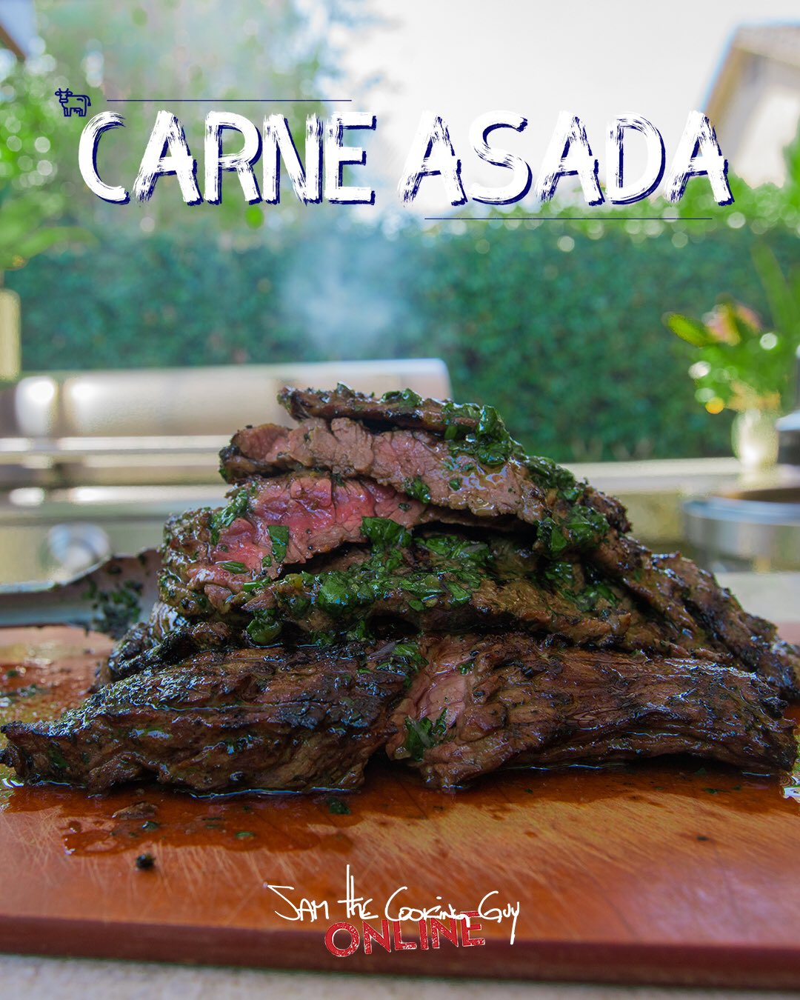

The Recipe
Actual Recipe

Description
Sam the Cooking Guys' Carne Asada recipe is probably my most often made recipe out of all the food I cook. I use it for meal prep, I make it for my friends, it is my go to for barbecues. It is just so affordable, makes a large amount, and most importantly, it's EASY
The recipe can is a marinade for flap meat. It can be blended or prepared by hand. A little warning: if you blend it, prepare for some green meat.. But there is no harm in that right?
- 1 bunch cilantro (no stems) chopped
- 3 large cloves of garlic, minced
- 1 tbsp cumin
- 2 tsp brown sugar
- 1 tsp each kosher salt and black pepper
- 1/2 cup neutral oil
- Zest & juice of one lime
- 2 tbsp soy sauce
- 2 lb skirt, flap or flank steak
Directions
- Combine/blend all ingredients except the steak
- Put steak and marinade into a large ziplock bag, zip shut and squish around to make sure steak is well covered
- Refrigerate 1-4 hours (over night is fine too)
- Heat grill to high and grill steak approximately 5 minutes per side, or as necessary. Looking for 130 degrees
- Remove from grill, cover with foil and let rest for about 10 minutes before cutting across the grain (very important btw) and serving